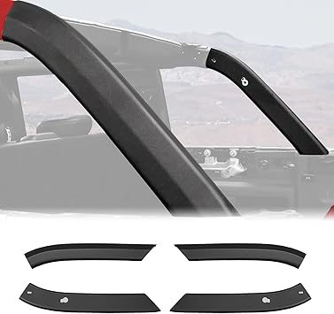
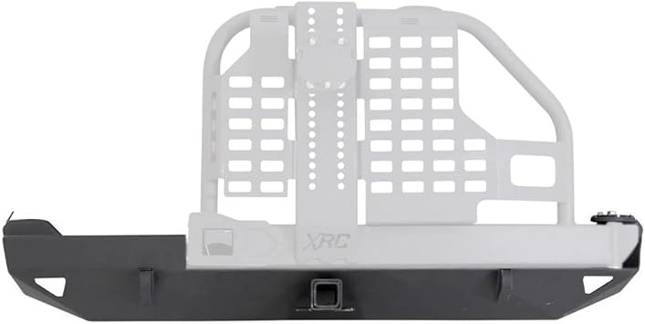
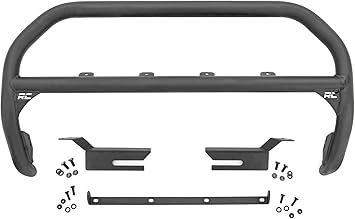
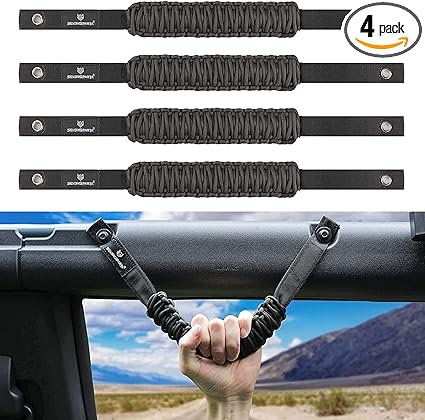
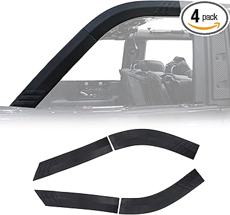

← broncorollbars.com
Broncorollbars Explained: 2026 Edition
May 2026
Finding good broncorollbars shouldn't require hours of research. Yet in 2026, the sheer number of options makes it harder than it should be.
From Our Testing Notes
- Check "Frequently Bought Together" — it shows what extras you might need for your broncorollbars.
- Set price alerts on your top picks. broncorollbars prices can drop 30-40% without warning.
- The Q&A section on broncorollbars listings often answers questions that no review covers.
- The 3-star reviews are gold. They're usually the most balanced and honest takes on broncorollbars.
The Specs That Matter
- Total cost of ownership — The cheapest broncorollbars upfront can be the most expensive over time with replacements and accessories.
- Material grade — Higher-grade materials in broncorollbars last longer and perform better, even when designs look similar.
- Value ratio — Mid-range broncorollbars usually deliver 90% of premium performance at half the cost.
- Compatibility — Always double-check that broncorollbars fits your specific setup before ordering.
- Price trends — broncorollbars prices fluctuate. Track your picks and buy when the price dips.
What We Wish We Knew
- Not measuring — "It looked bigger online" is the #1 return reason for broncorollbars. Measure twice.
- Going with the cheapest option — Budget broncorollbars cut corners. Spending 20% more often gets something that lasts 3x longer.
- Panic buying on sale days — Prime Day and Black Friday broncorollbars deals aren't always real discounts. Check year-round pricing.
Worth Your Money

→ #2 — FengYu Roof Rack Cross Bars Compatible with Ford Bronco Sport On Road Base — Consistently rated

→ #3 — KINGGERI 265lbs Roof Racks Cross Bars Fit for Ford Bronco Sport Off-Road 20 — Consistently rated

→ #4 — Hooke Road Bronco Overhead MOLLE Panel Roll Bar Storage Rack 2021-2026 Ford — Highly reviewed

→ #1 — Universal Adjustable Truck Bed Chase Rack Roll Bar for Most Full Size Picku — Consistently rated

→ #5 — ROXX Universal Roll Bars for Pickup Sport Chase Rack Various Trucks — Consistently rated
In Summary
The best broncorollbars is the one that fits your needs and budget. Our detailed comparisons on broncorollbars.com make that call easier.
Affiliate Disclosure: As an Amazon Associate, we earn from qualifying purchases. This doesn't affect our recommendations.